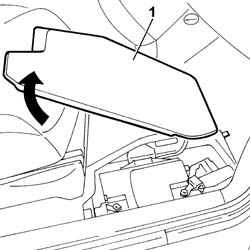
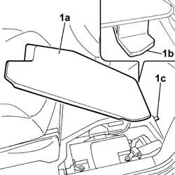

5530B56 BATTERY DRIP TRAY COVER - R.R.
- Path
- Procedures > 55 ELECTRICAL EQUIPMENT > 5530 CURRENT GENERATION > 5530B BATTERY AND LEADS > 5530B56 BATTERY DRIP TRAY COVER - R.R.
- Kind
- repair procedure (removal / refitting; the operation number is the code)
- Applies to
- all engines; all production periods
- Interactive page
- https://sloeber94.github.io/elrnDB-fUlss/en/#/179007566
Applies to: all engines; all production periods
 Removing
Removing
 Refitting
Refitting1. Lift up the battery drip tray cover at the back and release it.

Applies to: all engines; all production periods
Refitting
Removing1. Position the battery drip tray cover (1a) inserting the pin (1b) in the special housing (1c) in the floor.

Topics that link to this page (237)
- 1004B10 POWER UNIT WITH MANUAL GEARBOX - R.R
- 1016C10 SINGLE CYLINDER HEAD - R.R. AND REPLACE GASKET
- 1016B10 SINGLE CAMSHAFT HOUSING - REPLACE GASKET
- 1016B20 LEFT CAMSHAFT HOUSING - REPLACE GASKET
- 1016B24 RIGHT CAMSHAFT HOUSING - REPLACE GASKET
- 1020A20 CRANKCASE OIL SUMP - R.R CLEAN SURFACES FOR SEALANT APPLICATION
- 1020D14 FRONT CRANKSHAFT OIL SEAL COVER - R.R AND REPLACE SEALS FOR VERSIONS WITH OIL PUMP ON CRANKSHAFT, TIMING SIDE
- 1020D12 FRONT CRANK SHAFT OIL SEAL COVER - R + R AND REPLACE SEALS
- 1020D18 FRONT CRANK SHAFT COVER OIL SEAL - REPLACE
- 1028H10 PISTON WITH CONNECTING ROD - R R
- 1032B10 TOOTHED TIMING BELT - R + R FOR TIMING ADJUSTMENT OR REPLACEMENT
- 1032B46 TOOTHED DRIVE PULLEY - R + R
- 1032B52 TOOTHED DRIVEN PULLEY (ONE) - R + R
- 1032C18 MOBILE TIMING SYSTEM TENSIONER - R + R FOR 24 VALVE ENGINES
- 1032C32 FIXED TIMING SYSTEM TENSIONER (ONE) R + R
- 1036B50 CAMSHAFT FLYWHEEL - R.R.
- 1036C10 CAMSHAFTS IN CAMSHAFT HOUSING - R.R - INCLUDES CAMSHAFT HOUSING REPLACEMENT, IF NECESSARY
- 1036L10 CAMSHAFT IN CYLINDER HEAD - R R ON VEHICLE
- 1036G10 CAMSHAFT CONTROLLING VALVES IN LEFT CAMSHAFT HOUSING - R.R. - INCLUDES REPLACEMENT OF CAMSHAFT HOUSING, IF NECESSARY
- 1036G20 CAMSHAFT CONTROLLING INTAKE VALVES IN TOP HEAD - R + R WITH TOP HEAD REMOVED - INCLUDES REPLACEMENT OF TOP HEAD IF NECESSARY
- 1040A20 FUEL TANK - R + R AND DECANT FUEL FOR VERSIONS WITH EVAPORATION CONTROL SYSTEM
- 1040A71 SUBMERGED PUMP ASSEMBLY COMPLETE WITH FUEL GUAGE - R R WITH TANK REMOVED
- 1056B15 THROTTLE BODY INTERGRAL WITH MDS - R R
- 1056B44 AIR PRESSURE SENSOR - R.R.
- 1056B50 COOLANT TEMPERATURE SENSOR - R + R
- 1056B51 CAM ANGLE SENSOR R + R
- 1056B60 SINGLE FUEL MANIFOLD PIPE, WITH INJECTORS - R + R
- 1056B82 INJECTION/IGNITION SYSTEM E.C.U. (ONE) - R + R
- 1060F10 FUEL INJECTORS
- 1060F30 FUEL DELIVERY MANIFOLD - R R
- 1060F34 LINES TO INJECTORS - R R
- 1060F36 LINES TO INJECTORS - R R
- 1060E10 PRESSURE PUMP - R R
- 1060E30 PRESSURE PUMP PULLEY - R R
- 1060E40 SUPPLEMENTARY PRESSURE PUMP - R R
- 1064A19 TURBOCHARGER UNIT - EXHAUST MANIFOLD - COUPLING SLEEVE AND EXHAUST PIPES - R R
- 1072B10 INLET MANIFOLD - R + R AND REPLACE SEAL
- 1080B94 FRONT LAMBDA PROBE WITH CATALITIC CONVERTER R R
- 1080B95 REAR LAMBDA PROBE WITH CATALITIC CONVERTER R R
- 1080B98 LAMBDA SENSORS (ALL) - R.R.
- 1080C24 E.G.R. SYSTEM SOLENOID - R + R
- 1080C80 EXHAUST GAS WATER HEAT EXCHANGER FOR EGR VALVE R R
- 1080D34 ENGINE OIL VAPOUR SEPARATOR - R + R
- 1080E26 FUEL VAPOUR CUT OUT VALVE FROM FILTER - R.R.
- 1084A42 ENGINE OIL TEMPERATURE SENDER UNIT - R + R
- 1084B34 CARTRIDGE ENGINE OIL FILTER SUPPORT - R + R
- 1088B20 ENGINE COOLING RADIATOR - R + R
- 1088B26 ENGINE COOLING RADIATOR PROTECTIONS/AIR DUCTS - ARRANGE
- 1088C10 WATER PUMP - R + R
- 1088C30 THERMOSTAT UNIT - R+R
- 1088E12 <x>LEFT ENGINE COOLING FAN OR FANS - R&R</x>
- 2125C28 GEAR CONTROL LEVER - R R
- 2125C30 GEAR ENGAGEMENT CABLE - R R
- 3310A48 FRONT BRAKE DISC (ONE), LEFT OR RIGHT - R.R
- 3310A30 FRONT BRAKE CALIPER ONE R R
- 3310A60 FRONT BRAKE PADS - REPLACE
- 3310A59 FRONT BRAKE DISC GUARD - R R
- 3330C10 MASTER CYLINDER (PUMP) - R + R
- 3330C30 BRAKE FLUID RESERVOIR - R + R AND WASH INSIDE
- 3330D20 ONE-WAY VALVE FOR BRAKE SERVO - R+R
- 3330D24 VACUUM PIPE FOR BRAKE SERVO - R+R
- 3330B22 BRAKE PEDAL - R+R MANUAL GEARBOX VERSIONS
- 3330B26 CLUTCH PEDAL - R+R
- 3340A10 HYDRAULIC ABS CONTROL UNIT - R+R
- 3340A30 RPM SENSOR (ONE) OF ONE L/H OR R/H FRONT WHEEL - R+R
- 3340A34 RPM SENSOR (ONE) OF ONE L/H OR R/H REAR WHEEL - R+R
- 3340B52 PUMP/CENTRAL OBS PIPE - R R
- 3340B55 CENTRAL BRAKE PIPE TO LH - R R
- 3340B56 RIGID PIPE FROM HYDRAULIC CONTROL UNIT TO RIGHT FRONT BRAKE - R.R.
- 3340B62 REAR CONNECTION CENTRAL PIPE - R R
- 3380A10 HANDBRAKE LEVER - R+R
- 3350E30 LATERAL ACCELERATION AND YAW SENSOR R R
- 4130B20 POWER STEERING PUMP - R.R.
- 4130B27 POWER ASSISTED STEERING PUMP AND ALTERNATOR MOUNTING - R.R.
- 4110A30 SUPPORT WITH STEERING CONTROL SHAFTS - R+R - INCLUDES R+R STEERING WHEEL
- 4420D10 REAR SUSPENSION AXLE - R+R INCLUDES BLEEDING
- 4420D48 REAR SUSPENSION CROSSMEMBER/AXLE BUSHES - REPLACE
- 4420D20 REAR SUSPENSION AXLE -REPLACE- INCLUDES R+R, CHECK, PARTS TRANSFER AND BLEEDING
- 4450C10 FRONT STEERING KNUCKLE (ONE), L/H OR R/H COMPLETE WITH WHEEL HUB - R+R WITH WHEEL REMOVED - CHECK WHEEL GEOMETRY SEPARATELY
- 5010B24 UNDER-FACIA AIR DUCTS R R
- 5010B39 FRONT CONNECTION FOR CENTRAL AIR DUCT TO REAR SEATS - R R
- 5010B45 DUCT FROM CLIMATE CONTROL SYSTEM - R R
- 5010B47 SIDE AIR DUCT TO REAR SEAT(ONE), LH OR RH - R R
- 5010C60 LH OR RH REAR AIR OUTLET -ONE- R R
- 5010D27 UPPER MIXED AIR TEMPERATURE SENSOR (1), LH OR RH - R R FOLLOWING ELECTRICAL CIRCUIT CHECK
- 5010D56 SOLAR SENSOR - R R AFTER CHECKING ELECTRICAL SYSTEM
- 5020M10 INDEPENDENT HEATER UNIT - R R
- 5020M16 SUPPLEMENTARY INDEPENDENT HEATER MOUNTBRACKET R R
- 5050B22 FRONT AND REAR SCREEN WASHER PUMP - R+R
- 5050B38 WINDSCREEN WIPER ASSEMBLY - R+R OR REPAIR
- 5050B64 RAIN SENSOR ELECTRONIC UNIT R R
- 5050C42 REAR WIPER MOTOR - R+R
- 5050D20 HEADLAMP WASHER PUMP - R+R
- 5040A20 AIR CONDITIONER COMPRESSOR - R+R - INCLUDES FLUID LEVEL CHECK AND TOP UP IF NECESSARY
- 5040A40 AIR CONDITIONER CONDENSER - R+R
- 5040A41 A/C CONDENSER FAN - R+R
- 5040A43 FAN (ONE) LEFT OR RIGHT FOR AIR CONDITIONING CONDENSER
- 5040A54 PIPE FROM DEHYDRATING FILTER TO EXPANSION VALVE - R+R
- 5040B14 AIR CONDITIONER SYSTEM MULTI-LEVEL PRESSURE SWITCH - R+R
- 5040B64 SENSOR ON EVAPORATOR FOR A/C ECU - R + R
- 5040C13 AIR CONDITIONER HEATER/DISTRIBUTOR ASSEMBLY - R R
- 5040C22 AIR CONDITIONING FAN ASSEMBLY - R.R.
- 5040C30 FAN MOTOR - R+R
- 5040C50 AIR CONDITIONING HEATER RADIATOR - R.R.
- 5040C64 A/C MANUAL CONTROL SWITCH (ONE) - R+R
- 5040D75 AIR CONDITIONING RECIRCULATION FLAP CONTROL MOTOR - R.R.
- 5040D76 AIR CONTITIONER DISTRIBUTION FLAP CONTROL MOTOR - R R
- 5040D84 AIR CONDITIONER LEFT HAND AIR MIXER FLAP CONTROL MOTOR - R R
- 5040D86 AIR CONDITIONER RIGHT HAND AIR MIXER FLAP CONTROL MOTOR - R R
- 5040D90 AIR CONDITIONER SYSTEM WIRING BUNDLE - R R
- 5505A13 ADDITIONAL JUNCTION UNIT IN ENGINE COMPARTMENT - R.R.
- 5505A22 SLIDING SIDE DOOR CONTACT MOUNT, L.H. OR R.H. (ONE) R R
- 5505A28 CONTAINER OF SUPPLEMENTARY JUNCTION UNIT IN ENGINE BAY - R R
- 5505A32 BODY COMPUTER - R R
- 5505A38 POWER UNIT/BODY EARTH WIRE - R+R
- 5505A42 CONTROL UNIT DIGITAL NETWORK NODE IN DRIVERS SIDE DOOR RR
- 5505A66 FRONT, CENTRE OR REAR SUN ROOF (ONE) NODE (DIGITAL NETWORK CONTROL UNIT) - R.R.
- 5505A76 LEFT OR RIGHT SLIDING SIDE DOOR NODE (DIGITAL NETWORK CONTROL UNIT) - R.R.
- 5505B30 WIRING BUILT INTO SLIDING SIDE DOOR LEFT OR RIGHT R R
- 5505B31 SLIDING SIDE DOOR INCORPORATING WIRING WITH SLIDING SIDE DOOR PANEL REMOVED. S-R
- 5510C10 IGNITION COIL/S - R+R
- 5510C26 RPM SENSOR - R+R
- 5510C42 KNOCK SENSOR - R+R
- 5510D10 SPARK PLUGS - R+R
- 5530B40 SUPPLY BOX ON BATTERY (LINK BATTERY AND FUSE BOX) - R R
- 5530B10 BATTERY - R+R
- 5530B22 BATTERY EARTH LEAD - R+R
- 5530B60 BATTERY FASTENING BELT/RETAINERS - REPLACE
- 5530A10 ALTERNATOR - R+R
- 5520A10 IGNITION SWITCH ASSEMBLY - R+R
- 5520B10 STARTER MOTOR - R+R
- 5520C COLD STARTING SYSTEM (DIESEL ENGINES)
- 5540A44 L/H OR R/H TAIL LIGHT (ONE) - R+R
- 5540A50 TAIL-LIGHT BULB (ONE), LH OR RH - REPLACE
- 5540A94 L/H OR R/H NUMBER PLATE LIGHT (ONE) - R+R
- 5540B42 CONTROL UNIT FOR ONE GAS DISCHARGE LIGHTING UNIT ONE LH OR RH R R
- 5540B44 DIPPED BEAM FOR ONE GAS DISCHARGE LIGHTING UNIT ONE LH OR RH R R
- 5540B46 LAMPADA ONE MAIN BEAM OR TURN SIGNAL LH OR RH OF ONE GAS DISCHARGE LIGHTING UNIT R R
- 5540B48 BULBFOR SIDE LIGHT OF ONE GAS DISCHARGE LIGHTING UNIT ONE LH OR RH R R
- 5540B69 BULB FOR FOG LIGHT - R.R. WITH LIGHT CLUSTER REMOVED
- 5540B78 LEFT FRONT LIGHT CLUSTER WITH TURN SIGNAL AND FOGLAMP R R
- 5540B79 RIGHT FRONT LIGHT CLUSTER WITH TURN SIGNAL AND FOGLAMP R R
- 5540B90 GAS DISCHARGE FRONT LIGHT CLUSTER WITH DIRECTION INDICATOR AND FOG LIGHT (ONE) LEFT OR RIGHT - R.R.
- 5540C42 SENSOR FOR CORRECTING/ALIGNING GAS DISCHARGE LIGHTING UNITS ON FRONT SUSPENSION - R R
- 5540C46 SENSOR FOR CORRECTING/ALIGNING GAS DISCHARGE LIGHTING UNITS ON REAR SUSPENSION - R R
- 5550A10 STALK UNIT ASSEMBLY - R+R
- 5550B32 HORN R R
- 5550C14 HAZARD WARNING LIGHT SWITCH - R+R
- 5550C22 L/H OR R/H SIDE FLASHER (ONE) - R+R
- 5550C54 (ONE), SIDE REPEATER BULB LEFT OR RIGHT - R.R.
- 5550D10 BRAKE LIGHT SWITCH - R+R
- 5550D16 THIRD STOP LIGHT - R+R
- 5550D17 THIRD BRAKE LIGHT - R R
- 5550D18 HANDBRAKE ON WARNING LIGHT SWITCH - R+R
- 5550D22 REVERSING LIGHT SWITCH - R+R
- 5560B07 ANALOGUE CONTROL PANEL - R+R
- 5580C14 AIR BAG ECU - R+R
- 5580C22 AIR BAG MODULE PASSANGER SIDE R R
- 5580C26 PASSENGER AIR BAG SWITCH - R R
- 5580C40 SIDEBAG SENSOR (ONE), LH OR RH - R R
- 5580A36 SWITCH ON BRAKE PEDAL FOR CRUISE CONTROL - R.R.
- 5580A38 SWITCH ON CLUTCH PEDAL FOR CRUISE CONTROL - R+R
- 5580E08 AERIAL FOR ALPHA CODE - R R
- 5580H10 PARKING OBSTACLE DETECTION DEVICE ELECTRONIC CONTROL UNIT - R R
- 5580H12 PARKING OBSTACLE DETECTION DEVICE BUZZER - R R
- 5580P20 CENTRALINA DEL CONNECT - S.R.
- 5580P24 CONNECT CONTROL UNIT SUPPORT - R.R.
- 5570T61 MULTI-FUNCTION AERIAL - R R
- 5570T90 FRONT SPEAKER - R R
- 5570T98 REAR SPEAKER - R R
- 7005A28 FRONT SIDE DOOR LIMITER- REPAIR OR REPLACE
- 7005C08 FRONT DOOR EXTERIOR HANDLE MOUNT (ONE), LH OR RH - R R
- 7005C11 FRONT SIDE DOOR OUTSIDE HANDLE R R
- 7005C17 BLOCK FOR FRONT SIDE DOOR LOCK R R WITH DOOR PANEL REMOVED
- 7005D15 FRONT SIDE DOOR DESCENDING WINDOW GLASS R R
- 7005D18 FRONT SIDE DOOR DESCENDING WINDOW GLASS CHANNEL R R
- 7005D26 FRONT SIDE DESCENDING WINDOW GLASS SCRAPER (OUTER) R R
- 7005D30 FRONT SIDE DESCENDING WINDOW GLASS SCRAPER (INNER) R R
- 7005E10 FRONT SIDE DOOR INNER PANEL - R R FOR REPLACEMENT
- 7005E52 WEATHER STRIP ON FRONT SIDE DOOR PILLAR TRIM (ONE) LH OR RH - R R
- 7005M12 PASSENGER SIDE FRONT DOOR ELECTRICALLY OPERATED WINDOW SWITCH - R R
- 7005M14 SWITCH UNIT CONTROLLING ELECTRIC WINDOWS REAR VIEW MIRRORS AND DOOR LOCK ON DRIVERS SIDE FRONT DOOR R R
- 7005M26 ONE FRONT DOOR ELECTRIC WINDOW MECHANISM', LEFT OR RIGHT - R.R .
- 7005M29 FRONT SIDE DOOR ELECTRICALLY OPERATED WINDOW MOTOR R R WITH DOOR PANEL-MOUNT FRAME REMOVED
- 7020D10 SLIDING DOOR LOCK - R+R OR REPAIR
- 7020D20 INTERIOR/EXTERIOR HANDLE PROTECTION FOR ONE SLIDING SIDE DOOR - R.R.
- 7020D28 SLIDING SIDE DOOR OUTER HANDLE SUPPORT (ONE) LEFT OR RIGHT - R. & R.
- 7020D65 SLIDING SIDE DOOR ROD S-R
- 7020D32 SLIDING SIDE DOOR INTERIOR OPENING HANDLE/ESCUTCHEON (INTERIOR) - R.R.
- 7020D34 SLIDING DOOR INTERIOR HANDLE - R+R
- 7020D67 ROD FOR LEFT OR RIGHT MOTORIZED SLIDING SIDE DOOR OPENING/CLOSING DEVICE - ADJUSTMENT
- 7020D58 SLIDING SIDE DOOR INTERIOR OPENING RELAY DEVICE (WITH HANDLE) (ONE) R.R. FOR REPAIR OR REPLACE
- 7020N20 MOTOR CATCH ASSEMBLY ONE OF SLIDING SIDE LOCK LEFT OR RIGHT R R
- 7020N30 GEARED MOTOR FOR OPENING/CLOSING LEFT OR RIGHT (ONE) SLIDING SIDE DOOR - R.R.
- 7015B10 SINGLE TAILGATE LOCK - R+R OR REPAIR WITH PANEL/PROTECTION REMOVED
- 7015B60 MANIGLIA ESTERNA PER APERTURA PORTELLONE CON INTERRUTTORE PER SBLOCCAGGIO PORTELLONE - S.R.
- 7015B64 MODULO PORTAINTERRUTTORI E LUCI TARGA NELLA MANIGLIA APERTURA PORTELLONE E/O CRISTALLO LUNOTTO - S.R.
- 7040A10 DASHBOARD TRIM - R+R
- 7040A14 FLAP OF GLOVE COMPARTMENT TRIM ELEMENT (ONE) - ARRANGE
- 7040A26 STEERING COLUMN TRIM - R+R
- 7040A31 FLAP ASSEMBLY - R R
- 7040A32 FLAP HANDLE - R R
- 7040A39 DEVICE FOR DRIVER`S SEAT SQUAB LUMBAR ADJUSTMENT - R R
- 7040A45 FACIA RH SIDE COVER - R R
- 7040A47 ODDMENTS POCKET UNDER DASHBOARD - R.R.
- 7040A49 CONNECTOR HOLDER TRIM FOR EOBD - R.R.
- 7040A60 UNDER FACIA TRIM - R+R
- 7040A66 CENTRE CONSOLE UNDER DASHBOARD - R.R.
- 7040A74 TRIM UNDER CONTROL PANEL - R.R.
- 7040A89 SPEAKER GRILLE (ONE) LH OR RH ON INSTRUMENT FACIA - R R
- 7040A97 FACIA TRIM SUPPORT BEAM - R R
- 7040B13 LOAD COMPARTMENT/LOAD PLATFORM RIGHT SIDE TRIM - R R
- 7040E10 FRONT COURTESY LIGHT - R+R
- 7040E12 CENTRAL COURTESY LIGHT - R+R
- 7040E24 LOWER COURTESY LIGHT INDOOR PANEL - R+R
- 7040E80 COURTESY LIGHT BULB - R.R.
- 7040G22 FACIA COMPARTMENT LIGHT SWITCH/BULB HOLDER - R+R
- 7040G30 BOOT LIGHT BULB HOLDER - R R
- 7040H10 ROOF PANEL LINING - R R
- 7040H16 ROOF PANEL LINING - R R
- 7040H36 CENTRAL TRIM LOWER ELEMENT - R R
- 7040H38 CENTRAL PILLAR UPPER ELEMENT - R R
- 7040H50 REAR PANEL - R R
- 7040L17 PASSENGER COMPARTMENT FLOOR FRONT CARPET - R R
- 7040L18 PASSENGER COMPARTMENT FLOOR REAR CARPET - R R
- 7045A10 L/H OR R/H FRONT SEAT (ONE) - R+R
- 7045A23 FRONT SEAT MOUNTS - R R
- 7045M10 FRONT SEAT HEATING SYSTEM SWITCH - R+R
- 7045M32 ELECTRONIC THERMOSTAT FOR SEAT HEATING SYSTEM S-R
- 7065A12 FRONT SEAT BELT (ONE), LH OR RH, WITH PRETENSIONER ON REEL - R.R
- 7065A18 FRONT SEAT BELT HEIGHT ADJUSTMENT (ONE), LEFT OR RIGHT - R.R.
- 7065A16 PANEL OF FRONT SEAT BELT HEIGHT REGULATOR LEFT OR RIGHT R R
- 7065B08 REAR SEAT BELT (ONE) WITH PRETENSIONER ON REEL, LEFT OR RIGHT - R.R.
- 7065C34 L/H OR R/H SUN BLIND (ONE) - R+R
- 7065C68 REAR VIEW MIRROR - R+R
- 7210E18 R.R. FRONT WING
- 7210E36 R.R. FRONT SIDE DOOR